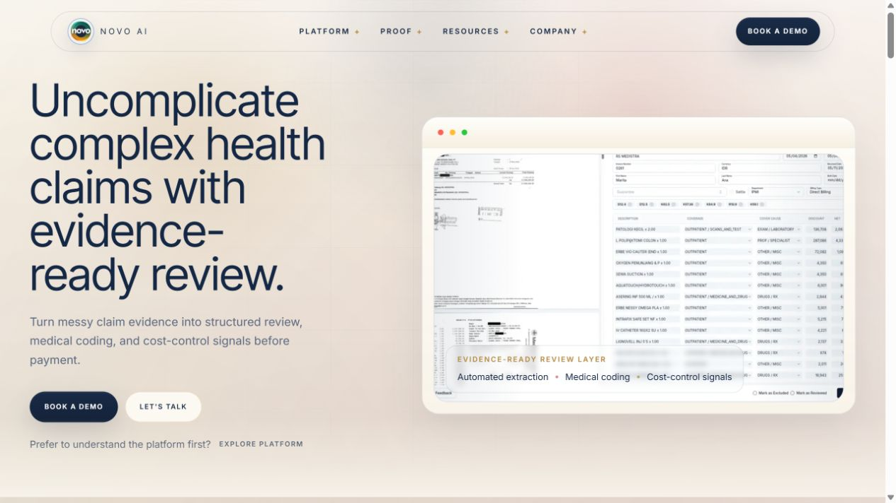
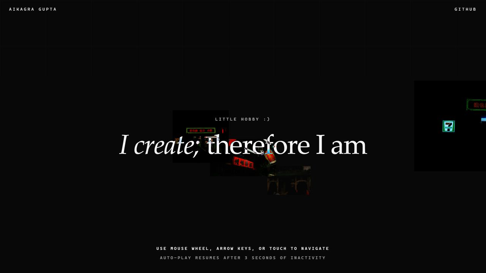

Featured evidence
2026
Herald
AI safety guidance built for the job site.
- Funding
- HK$100K
- Pilots
- 3 confirmed
Available for opportunities
Computer science student, product builder, and storyteller.
I’m Kai. I build useful systems from messy problems, from AI agents and document provenance to public-facing products, editorial workflows, and hardware prototypes.
Herald
Selected work
Each entry records the problem, my contribution, and the evidence that the work moved beyond a concept.
AI safety and compliance guidance for physical workers, translated from Hong Kong regulations into answers that arrive in under two seconds.
I built the live prototype, mapped the regulatory information architecture, and shaped the product around the realities of workers who need a direct answer on site.
A document-provenance system that gives recipient copies a linguistic fingerprint, then compares leaked screenshots or PDFs with the issued evidence.
A friend-friendly rental finder for Hong Kong Island that ranks listings, exposes trade-offs, and refreshes its public snapshot every three hours.
A production marketing site for an insurance-claims intelligence platform, backed by product demos, reviewer workflows, and a broader GTM automation system.

Open live website ↗A cinematic photography and videography portfolio with a 3D hero gallery and a live Flickr feed that refreshes the archive.

Enter the archive ↗A 47g Arduino and Bluetooth posture wearable with a companion app, shaped through user research and three prototype iterations.
The research found that 76% of respondents reported poor posture and more than 90% reported recurring back pain.
Field record
Growth and Automations Intern
Built GTM agents, RevOps workflows, the production website, and the product demo system. Worked across product, growth, search visibility, and sales enablement.
Teaching Assistant and School Peer Adviser
Lead first-year programming tutorials covering Python, program design, debugging, recursion, file handling, and algorithms. Advise students on course planning and university transition.
Editorial and Digital Intern
Managed publishing, SEO, and newsroom IT. Produced three video stories with more than 100,000 total views and interviewed former Malaysian Prime Minister Ismail Sabri Yaakob.
Repository shelf
Profile
I study Computer Science at the University of Hong Kong with a minor in Finance. I move between product strategy and implementation, then document the result so another person can understand, test, and use it.
Outside software, I work in photography, film, piano, video editing, and storytelling. Those practices shape how I frame a problem and communicate the answer.
The University of Hong Kong
BEng in Computer Science, Minor in Finance
Expected 2029
CGPA 3.74 · SAT 1550 · Duolingo English Test 150
Python, TypeScript, SQL, VBA, C++, Dart
Gemma/Ollama, agent workflows, Pydantic, OCR, fuzzy matching, human review
Next.js, React, Flutter, Arduino, Firebase, SQLite, Linux, Git
English, Hindi
I’m open to internships, product and engineering opportunities, research collaborations, and ambitious early-stage work.
aikagra2007@gmail.com ↗